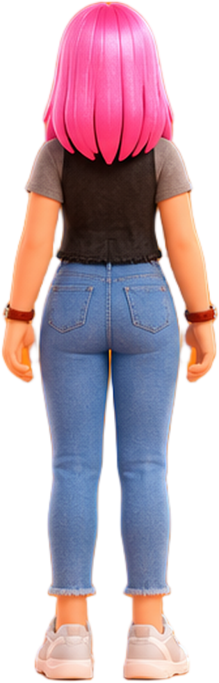

M
Mom
Yesterday
omw home luv u
dont forgt ur lunch
ok mom
proud of u kidddo
Today 3:07 AM
I'm at work. Someone is in the house. Hide.
M
Mom
Yesterday
omw
home
luv
u
dont forgt
ur lunch
ok mom
proud of u
kidddo
Today 3:07 AM
I'm at work. Someone is in the house. Hide.
M
Mom
ok mom
proud of u kidddo
Today 3:07 AM
I'm at work. Someone is in the house. Hide.
3:09 AM
Don't go down those stairs.
M
Mom
Don't go down those stairs.
3:10 AM
